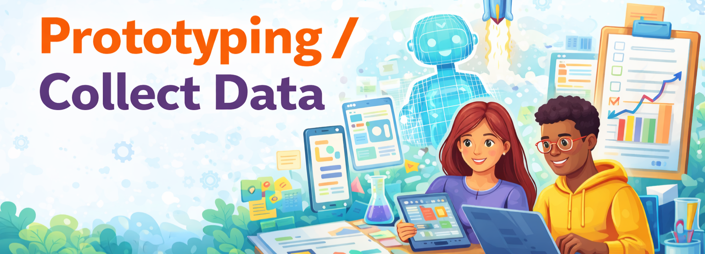

Build, test, and iterate based on evidence
This sprint focuses on making your work tangible and learnable through testing. Choose the section that matches your project type: Ed Tech Tool D&D, Course D&D, or Teacher Inquiry.

Jump to the track you are working on.
Build a functional prototype, test with stakeholders/target users, and iterate based on usability and learner experience feedback.
Complete these tasks early so you can improve your prototype with time to spare.
Submit by Friday so the instructor can review and provide formative feedback before we meet.
Combine everything into one Google Doc (link supporting documents if needed) and submit a shareable link to this Google Spreadsheets file under the corresponding worksheet.
Make sure your Google doc allows your peers to leave comments.
Prototype one course module, test with learners, and revise based on evidence from a small-scale trial.
Complete these tasks early so you can revise your module prototype before submission.
Submit by Friday so the instructor can review and provide formative feedback before we meet.
Combine everything into one Google Doc (link supporting documents if needed) and submit a shareable link to this Google Spreadsheets file under the corresponding worksheet.
Make sure your Google doc allows your peers to leave comments.
Implement your data collection plan, document the process, and summarize what you collected so far.
Complete these tasks early so you have time to clean, organize, and reflect on your data.
Submit by Friday so the instructor can review and provide formative feedback before we meet.
Combine everything into one Google Doc (link supporting documents if needed) and submit a shareable link to this Google Spreadsheets file under the corresponding worksheet.
Make sure your Google doc allows your peers to leave comments.
Review at least one peer’s submission before our bi-weekly meeting.